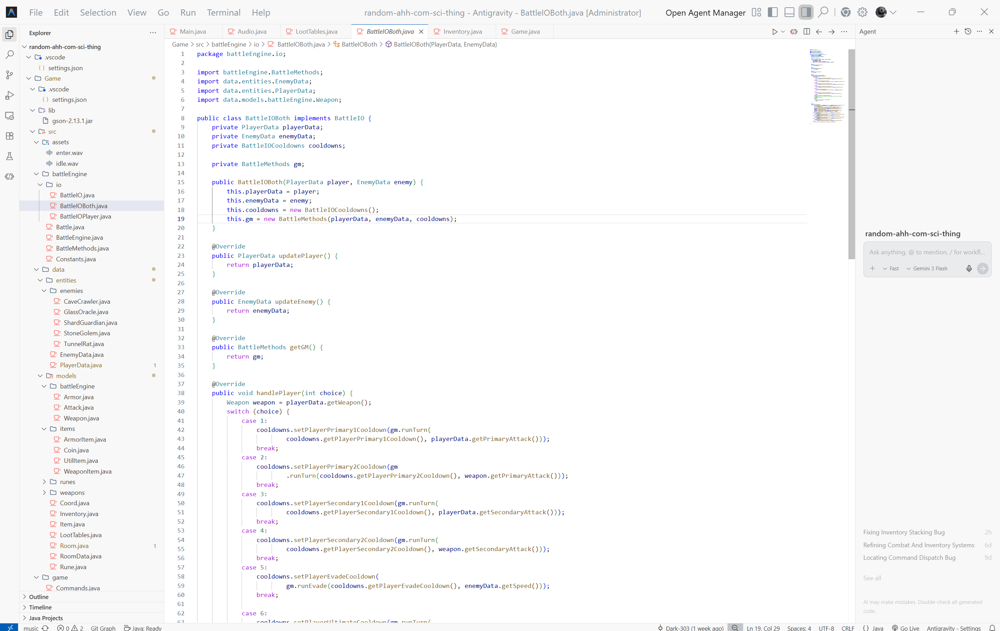
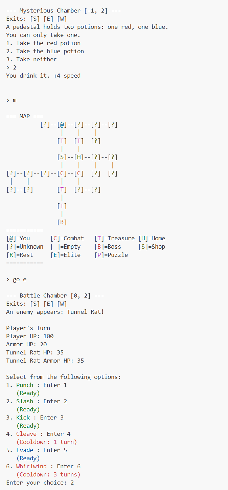

Zork Game
A fun application of skills
This game was designed as part of a final group project for ICS3U (Introduction to Computer Science). The game was based on the 1977 text based adventure game known as Zork. Our game was programmed in Java and we used our knowledge of programming as well as the Java programming language to add advanced features. It was a fun way to use the knowledge that I have to make something so advanced and yet so simple.
Various different systems were implemented and programmed into this game. This includes procedural generation with no broken paths, a complex battle engine to handle various actions and battles, a parser to understand commands, music, various room types to keep the game a fresh and non-repetitive, and player saves. The backend also featured a wide range of complex systems for security and stability purposes. These systems include encryption of the player data, hash security, and various checks to ensure the game is running smoothly. This is one of my most advanced projects as the whole thing is programmed with no build tools and no external packages. This means the whole game is programmed by us with no external help to make things easier.
Additionally, the music in game was composed by me both for fun and as a learning experience. I delved into the world of electronic music using a program called LMMS and have created two compositions for this game. One is for the main menu as a higher and more upbeat song and a slower simpler song for going about the game. Each song is created with a specific purpose and mood in mind such as the main menu song called Enter, is supposed to convey the feelings of excitement and mystery that comes with taking on a new adventure. The song Idle which plays during the main game loop is slower and is intentionally designed to not be distracting while adding an atmosphere of mystery and suspense.
GitHub Repository

